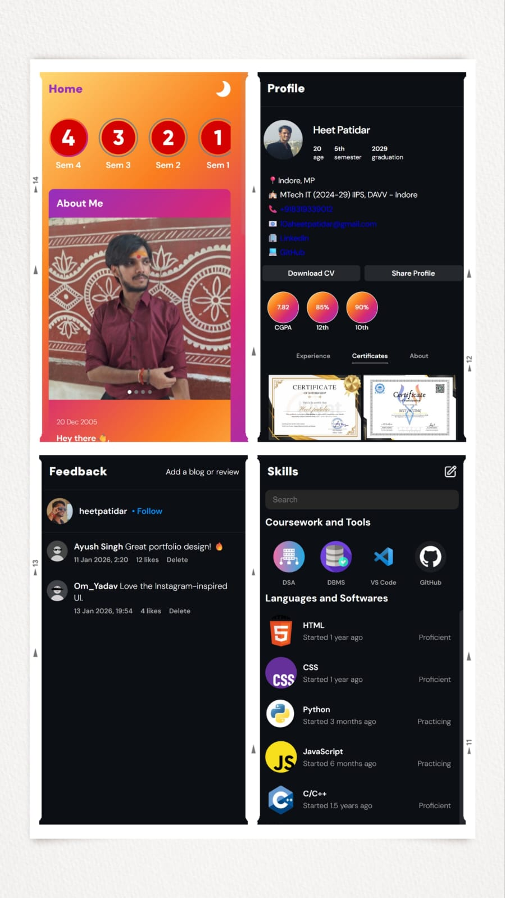

Projects

.svg)
Created a personal portfolio app using HTML, CSS, JS
Instagram-inspired personal portfolio app created to showcase my work, experience, projects, skills in an interactive form. Created using HTML, CSS, JS and version control using Git.
It contains the following pages:
Home page - The landing page that contains cards about me, along with highlights of my college journey
Projects page - It contains the set of projects I created, in an interactive reel format along with description and live links.
Skills page - It contains the technical and language skills.
Explore page - It contains the achievements, stats, and other things.
Feedback page - This is a user interactive page where users can comment a feedback or review.
Profile page - This page contains Contact links, experience, certificates, and other educational information
Home page - The landing page that contains cards about me, along with highlights of my college journey
Projects page - It contains the set of projects I created, in an interactive reel format along with description and live links.
Skills page - It contains the technical and language skills.
Explore page - It contains the achievements, stats, and other things.
Feedback page - This is a user interactive page where users can comment a feedback or review.
Profile page - This page contains Contact links, experience, certificates, and other educational information
Project caption